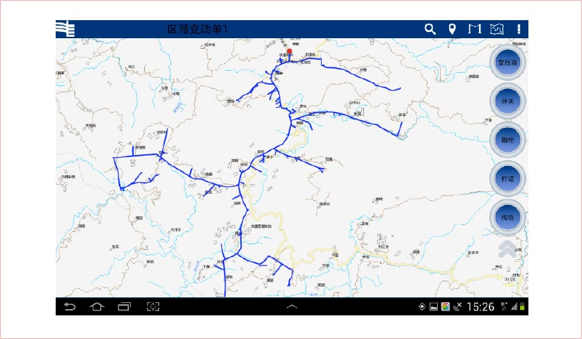

系统特点
-
离线加载
通过将地图数据与电网模型数据，进行移动端本地化保存，进行离线地图加载，减少了网络依赖，并且可以使得地图的内容更加丰富，地图展示更精确。使得野外使用不需要网络支撑，野外作业人员操作更加自由。
-
可视化拓扑维护
电网移动GIS作业平台采用图、数、模一体化技术实现电网的可视化维护，提供批量设备属性维护功能，采用符合业务部门习惯的杆塔明细表、配变台帐等表格形式，在一个界面中显示多条设备的属性信息，提供复制、粘贴、填充等多种便捷录入方式，提供Excel导入、导出等存量数据接入功能，方便用户进行快速查询和录入。
模型驱动
模型驱动是把数据跟处理分开，用单独组件封装数据（不管是请求的，还是返回的，可以在一起封装），把处理类完全孤立成一个框架，用这个模型作为灵魂再驱动整个骨架。在模型驱动理论看来，平台本身是一个高度抽象的信息系统，某个具体的信息系统实施过程可被视为平台的一次“设计化”。模型驱动的电网移动GIS作业平台实现原理如下图所示。
平台提供系统管理工具将电力GIS业务需求转化为电力设备/设施模型，通过对电力设备/设施数据结构、数据约束和操作的抽象，实现不依赖具体设备类型的逻辑组件。系统运行时，读取模型数据，根据运行状态和模型数据设置功能组件满足业务需求。
图模一体化
电网图形一体化是对各专业、各电压等级电网设备建立统一的图形存储、展现和连接关系。电网移动GIS作业平台通过统一设备分类和标识、统一设备模型、统一数据存储、统一图元标准来实现电网图形一体化。
全省集中部署
电网移动GIS作业平台，采用全省集中部署的方式，方便了用户的使用，减少用户的维护工作，一线用户只需要一键就可以实现数据的上传，所有数据的处理全部由后台自动完成。
全省集中部署，可以很好的实现了电网移动GIS作业平台与其他系统的对接，以及最终数据在电网GIS平台中的展现。解决当前一些系统按着区县部署中服务不能维护的问题。
信息收集无限可能
随着电网信息化的发展和电网管理水平的不断提高，对电力网络的地理空间数据，电气参数和资产数据的收集提出了新的要求。面向电力企业的一线工作人员，将移动应用深入人心，便捷信息数据的收集和处理，助力电网发展，为电网的信息化提供无限可能！
核心功能
地图展示
点击本移动应用后，在平板电脑上就会离线加载地图，清晰的会呈现出用户工作地的地理情况，地理参考物，使得用户可以清楚的知道自己所在位置。
电网模型展示
用户通过在平板电脑上，将需要工作的电网模型展现出来，配和加载的地图让用户直观的了解电网网架的走向，每一个设备的位置，以及对此设备当前的上下游的关系。使得原本复杂的网架关系，变得简单，明了。一线使用人员，通过展现的了电网模型，就知道了什么地方需要处理，为使用者提供了便捷的操作方式。
电网模型管理
在应用中提供了丰富的电网模型数据，提供各类电网资源的空间数据维护相关功能，主要包括各种电网图形编辑、台模关系维护、查询与统计、电网空间拓扑分析等功能。
不仅对电网组成结构、拓扑连接关系、电网资源的统计分析以及台模关系建立进行准确的描述和完整定义，也建立了一个电网性能和行为的分析模型，能够对各专业应用功能提供信息及技术支撑。
电网资产管理
电网网络模型的精确展示是信息收集的基础，通过将电网模型进行展现以后，提供了电网设备的资产管理功能，这对于设备的电气参数和设备资产的摸底是极其有用的。在设计中，收集了使用人员的习惯和基于平板电脑本身的操作方式，尽量减少用户的文字输入操作，将设备资产按着各个属性进行展现，采用点击选择的方式，让用户可以便捷的将资产录入系统。
辅助功能
利用平板电脑的功能的，将移动应用中极具自身特色的功能，整合到本应用中，为用户提供了，指南针，定位，相机等辅助功能，并且设计了地图缩小放大，漫游等GIS特有的功能。减少了用户对其他电子设备的携带。

联想移动互联解决方案
联想移动互联解决方案以最终用户的体验为出发点，借助移动互联、大数据分析、云计算等创新技术，通过业务流程的再造，实现了企业资源的合理规划和高效运转。
联想在移动互联领域，通过梳理客户业务流程，整合行业专业应用软件，针对客户的行业特质以及业务需求进行深度定制，目前已储备超过200余项专业解决方案。更多解决方案以及产品、案例、咨询信息，请通过以下入口进入（ID:Lenovomia）：